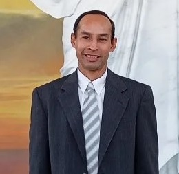

Miguel Jose Mancilla Avila | WDD 130

Meu nome é Miguel Jose Mancilla Avila, sou de Santa Elena de Uairen, Edo Bolivar, Venezuela. Tenho dois anos morando em Sao Paulo e estou gostando de viver aqui. Trabalho como operador de maquina na empresa azepel. Sou membro da igreja de Jesus Cristo dos Santos dos Ultimos Dias. Teve a oportunidade de servir como missionario o que fortaleceu meu evangelho de Jesus Cristo e me permitiu ajudar a muitas pessoas a conhecer o evangelho de Jesus Cristo. Atualmente sou o professor da aula de quorum de elderes o que estou gostando porque posso ajudar a os membros do quorum de elderes a fortalecer seu testemonha e tambem posso aprender deles. Agradeço ter conhecido o evangelho de Jesus Cristo porque me ajudou a compreender o amor de Deus.